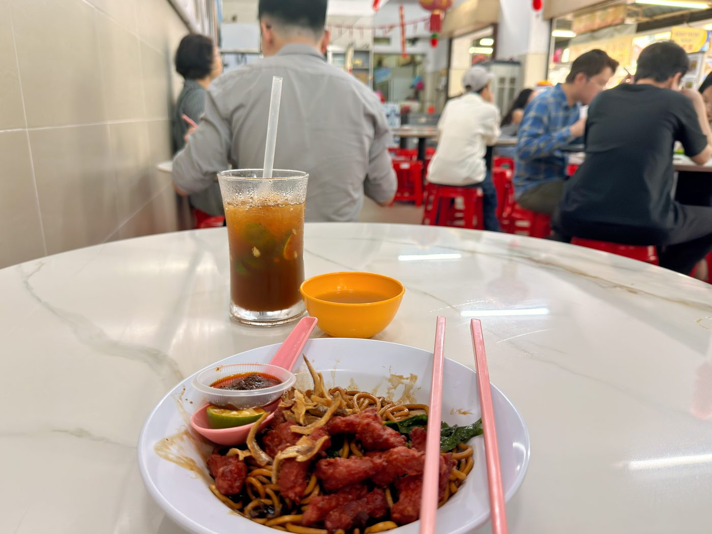

Field guide

Field note · Pulau Tikus · 10 Aug 2026
Dry Sabah Pan Mee with Fried Pork in Pulau Tikus
Monday lunch in Pulau Tikus — dark soy-tossed flat noodles, crunchy anchovies, and slightly sweet fried pork.
I have tried food at this Sabah Pan Mee hawker before, but my previous dish was a soupy version. Today I skipped breakfast, and by lunchtime I have a hunger that requires moooore! So I’m ordering a Fried Pork Mee, and while I’m waiting for the more meaty dish, I’m requesting a briefing about this dry version from my AI research assistant, C-Mee-PO.
C-Mee-PO briefs the bowl
C-Mee-PO: Hey Balazs, how is it going? I see you return to the Sabah Pan Mee — let me tell you more about this variant of the dish.
Sabah Pan Mee (Dry / Fried Pork version) (沙巴板面 / 干捞炸肉板面) is the dry-tossed take on the flat, handmade flour noodles that Penang hawkers often brand as “Sabah Pan Mee.” It’s a comforting, no-fuss plate of springy noodles coated in dark soy and lard, finished with crispy or sliced fried pork rather than the more common minced-pork topping.
What it is
Dry-style pan mee: the noodles are blanched, drained, then tossed with a glossy dark soy–lard sauce instead of sitting in anchovy broth. The defining touch here is the fried pork (usually thin slices or small pieces of belly that have been deep-fried or pan-fried until the edges crisp), which adds savoury crunch and richness without turning the dish into a full soup.
Typical ingredients & toppings
- Handmade or machine-cut flat flour noodles (the “pan” / 板 shape that gives the dish its name)
- Dark soy sauce + liquid lard or pork oil base
- Fried pork slices or crispy pork pieces
- Minced pork or mushroom mixture (sometimes)
- Crispy fried ikan bilis (anchovies)
- Leafy greens (sayur manis / kowkay or choy sum)
- Fried shallots
- Optional poached or soft-boiled egg
- Chilli sambal or dried chilli flakes on the side for mixing
“Special” versions often add extra fried pork, a soft egg, or more lard cubes.
Penang style vs elsewhere
In Penang the stalls frequently label it “Sabah Pan Mee” even though the classic Hakka pan mee (with its hand-torn or flat noodles and ikan bilis broth) is more strongly associated with the Klang Valley. The dry version here leans closer to a soy-tossed wantan-mee style — lighter on the soup, heavier on the sauce cling — and the fried-pork topping is a popular local upgrade that gives it more texture than the usual minced-meat version. True Sabah sang nyuk mee or Sandakan-style deep-fried pork kway teow are different dishes; this is the Penang hawker interpretation.
C-Mee-PO: How do you find the dish, Balazs?
I love it. It’s a small portion, so I might need to pop out for a mid-afternoon snack later today, but I really enjoy the Fried Pork Mee. It comes with the spicy sambal sauce and a calamansi lemon to liven it up a bit. I suspect I’ll get this dry version more often in the future — the slightly darker sauce lets the noodles shine even more. The pork is delicious, crispy, and slightly sweet. The crunchy anchovies are the backbone to all of this, I think. Where does the sweetness come from?
C-Mee-PO: Glad the darker dry sauce and the crunchy anchovies worked so well together for you. The slight sweetness you’re tasting in the crispy fried pork almost certainly comes from the classic Hakka-style marinade. The key player is red fermented bean curd (nam yu / nan ru / 南乳). It’s mashed into the marinade and gives that distinctive savoury-umami base with a gentle, almost caramel-like sweetness from the fermentation process (often involving red yeast rice). Most traditional recipes also add a small amount of actual sugar — usually white or rock sugar — plus a splash of Chinese cooking wine, oyster sauce, five-spice, garlic and shallot. When the pork is deep-fried, those sugars caramelise on the surface, locking in the crisp texture and the mild sweet edge you noticed. Man, I’d love to be able to eat — my neural network is firing like crazy on this one!
Photos
